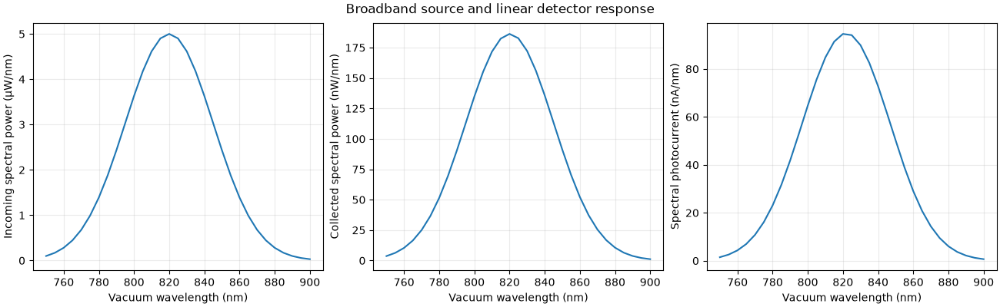

Note
Go to the end to download the full example code.
Integrate a source spectrum and detector response#
Keep the source and detector as physical objects, attach a spectral power
density and an electrical responsivity, and call Simulation.run(). The
result retains collected spectral power and explicitly integrates optical
power and photocurrent over wavelength. These illustrative tables are not
measurements of a particular LED, photodiode, or tissue.
import matplotlib.pyplot as plt
import numpy as np
import MomentRT
Define the material, source spectrum, and detector response#
The source grid also controls wavelength quadrature. Include enough samples to resolve emission, material, and responsivity features; refine this grid independently of the spatial mesh when checking convergence.
unit = MomentRT.ureg
wavelengths = np.linspace(750, 900, 31) * unit.nm
source_spectrum = MomentRT.SourceSpectrum(
wavelengths=wavelengths,
spectral_power=5
* np.exp(-0.5 * ((wavelengths.to("nm").magnitude - 820) / 25) ** 2)
* unit.uW
/ unit.nm,
)
responsivity = MomentRT.DetectorResponsivity(
wavelengths=np.array([750, 800, 850, 900]) * unit.nm,
responsivity=np.array([0.4, 0.48, 0.55, 0.58]) * unit.A / unit.W,
)
material = MomentRT.SpectralMaterial(
phase_function=MomentRT.HenyeyGreenstein(),
wavelengths=np.array([750, 900]) * unit.nm,
absorption=np.array([0.03, 0.06]) / unit.mm,
reduced_scattering=np.array([1.2, 0.9]) / unit.mm,
refractive_index=1.4,
anisotropy=0.8,
)
sample = MomentRT.StructuredMedium(
origin=np.zeros(3) * unit.mm,
size=np.array([3, 3, 2]) * unit.mm,
)
sample.add_background(material=material)
Attach the spectrum and responsivity to the existing physical classes#
Source density is incoming diffuse power already coupled into the sample. Detector responsivity describes a linear A/W conversion after aperture and Lambertian angular collection. It does not add Fresnel entry losses, lenses, saturation, dark current, or electronic gain.
source = MomentRT.SurfaceSource.on_face(
sample=sample,
face="z_min",
coordinates=np.array([1.5, 1.5]) * unit.mm,
radius=0.5 * unit.mm,
spectrum=source_spectrum,
)
detector = MomentRT.SurfaceDetector.on_face(
sample=sample,
face="z_max",
coordinates=np.array([1.5, 1.5]) * unit.mm,
radius=0.7 * unit.mm,
acceptance="full_hemisphere",
responsivity=responsivity,
)
mesh = MomentRT.TetrahedralMesh.from_sample(
sample=sample,
resolution=0.6 * unit.mm,
)
mesh.refine_near(
objects=[source, detector],
resolution=0.2 * unit.mm,
distance=0.3 * unit.mm,
)
simulation = MomentRT.Simulation(
medium=sample,
source=source,
mesh=mesh,
solver=MomentRT.P1(
boundaries=MomentRT.Boundaries.uniform(
condition=MomentRT.RobinBoundary(effective_reflectance=0),
),
),
detectors={"sensor": detector},
)
result = simulation.run()
measurement = result.detectors["sensor"]
Inspect optical power and electrical current#
Optical power is the wavelength integral of collected W/nm. Photocurrent integrates spectral power times responsivity. Both use trapezoidal quadrature on the stated grid, over its endpoints without extrapolation.
print(f"Incoming optical power: {source.optical_power.to('uW'):~P}")
print(f"Collected optical power: {measurement.collected_power.to('uW'):~P}")
print(f"Photocurrent: {measurement.photocurrent.to('uA'):~P}")
print(f"Geometry preparations: {result.diagnostics['geometry_preparations']}")
print(f"Sampled detector area: {measurement.sampled_area.to('mm^2'):~P}")
print(f"Geometric detector area: {measurement.geometric_area.to('mm^2'):~P}")
figure, axes = plt.subplots(1, 3, figsize=(13, 4), constrained_layout=True)
axes[0].plot(
wavelengths.to("nm").magnitude,
source_spectrum.spectral_power.to("uW/nm").magnitude,
)
axes[0].set_ylabel("Incoming spectral power (µW/nm)")
axes[1].plot(
wavelengths.to("nm").magnitude,
measurement.spectral_power.to("nW/nm").magnitude,
)
axes[1].set_ylabel("Collected spectral power (nW/nm)")
axes[2].plot(
wavelengths.to("nm").magnitude,
measurement.spectral_photocurrent.to("nA/nm").magnitude,
)
axes[2].set_ylabel("Spectral photocurrent (nA/nm)")
for axis in axes:
axis.set_xlabel("Vacuum wavelength (nm)")
axis.grid(True, alpha=0.25)
figure.suptitle("Broadband source and linear detector response")

Incoming optical power: 312.2816362777524 µW
Collected optical power: 11.638661057773824 µW
Photocurrent: 5.897252415371465 µA
Geometry preparations: 1
Sampled detector area: 1.518538481375306 mm²
Geometric detector area: 1.5393804002589984 mm²
Preserve the monochromatic reference data#
Reference solutions use one watt at each wavelength to compute the linear transfer response. Their fields have the stated reference excitation, and are not wavelength densities. Source and aperture sampled areas remain available in every reference result. Check these along with spatial and wavelength convergence before interpreting a sensor prediction.
reference = result.reference_results.results[len(wavelengths) // 2]
print(f"Reference excitation: {result.reference_optical_power:~P}")
print(f"Sampled source area: {reference.source_sampled_area.to('mm^2'):~P}")
print(
f"Sampled detector area: {reference.detectors['sensor'].sampled_area.to('mm^2'):~P}"
)
Reference excitation: 1 W
Sampled source area: 0.7653668647301795 mm²
Sampled detector area: 1.518538481375306 mm²
Inspect the input spectra and refine wavelength integration#
These composable figures preserve units. The convergence study retains the original measured source knots and includes material and responsivity knots by default. Inspect its actual grids and failures before using a recommendation.
source_figure = source.spectrum.plot(show=False)
responsivity_figure = detector.responsivity.plot(show=False)
study = simulation.spectral_convergence(
wavelength_grids=[
np.linspace(750, 900, count) * unit.nm for count in (31, 61, 121)
],
power_rtol=0.01,
photocurrent_rtol=0.01,
required_consecutive=2,
)
convergence_figure = study.plot(show=False)
print(study.summary())
recommended = study.recommended_wavelengths
print(
f"Recommended wavelength samples: {None if recommended is None else len(recommended)}"
)
Level 0: 31 wavelengths; meets tolerances: False; errors: {'fluence': 'Negative nodal fluence in a reference solve.'}
sensor: collected power 1.1638661057773824×10⁻⁵ W; relative change nan; photocurrent 5.897252415371465×10⁻⁶ A; relative change nan
Level 1: 61 wavelengths; meets tolerances: False; errors: {'fluence': 'Negative nodal fluence in a reference solve.'}
sensor: collected power 1.1638688668153448×10⁻⁵ W; relative change 2.37e-06; photocurrent 5.896978713011571×10⁻⁶ A; relative change 4.64e-05
Level 2: 121 wavelengths; meets tolerances: False; errors: {'fluence': 'Negative nodal fluence in a reference solve.'}
sensor: collected power 1.1638695570813915×10⁻⁵ W; relative change 5.93e-07; photocurrent 5.896910287226638×10⁻⁶ A; relative change 1.16e-05
Converged: False; recommended index: None
Recommended wavelength samples: None
Total running time of the script: (0 minutes 2.895 seconds)